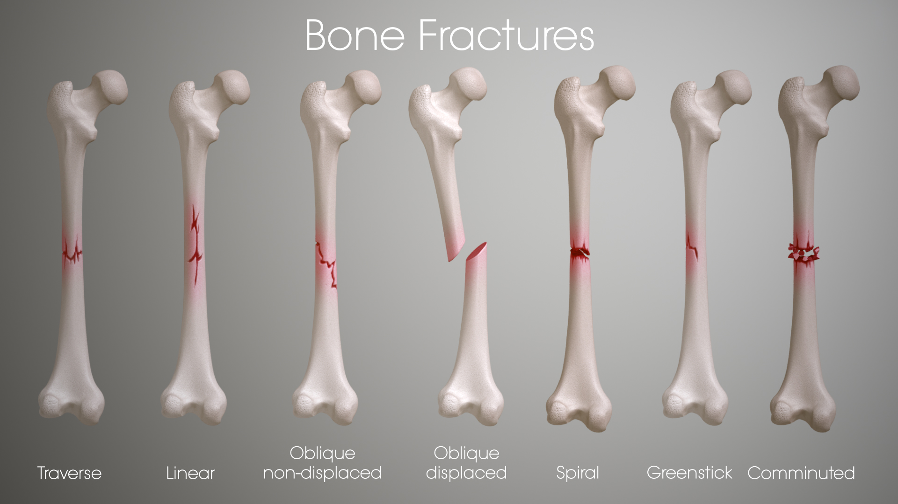
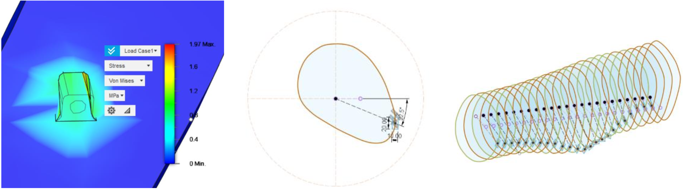

The SHAPE project addresses the challenges inherent in conventional fracture treatment methods, which rely on mass-produced flat plates that often fail to provide an optimal fit to the patient’s unique bone structure. These limitations result in stress localization, poor bone healing, and complications such as malunion and infection. Additionally, the manual bending of plates during surgery increases operative time and introduces variability, further impacting recovery outcomes.
Advances in additive manufacturing (AM), computational modeling, and medical imaging provide a transformative opportunity to develop patient-specific solutions. By integrating these technologies, SHAPE introduces semi-helical plates designed to conform precisely to a patient’s bone anatomy. This innovative approach aims to improve medical performance, reduce surgical time, and enhance recovery rates, setting a new standard in personalized fracture treatment. The project reflects a commitment to addressing critical gaps in orthopedic care through technological innovation and multidisciplinary collaboration.

Motivation

The SHAPE project was motivated by the pressing need to address the limitations of conventional fracture treatment methods, particularly the use of mass-produced flat metal plates. These plates, while widely utilized, often fail to provide an optimal fit to the patient’s unique bone structure, leading to stress concentration, poor healing outcomes, and complications such as malunion or infection. Additionally, the manual bending of plates during surgery increases operative time and introduces variability that can negatively affect patient recovery.
Advances in additive manufacturing (AM), medical imaging, and computational modeling present an opportunity to revolutionize fracture treatment by enabling the creation of patient-specific solutions. By integrating these technologies, SHAPE seeks to provide a more effective and personalized approach to bone repair, improving recovery rates and reducing surgical risks. This project reflects the commitment to leveraging emerging technologies to address longstanding challenges in orthopedic medicine, enhancing both clinical performance and patient outcomes.
Validation

The SHAPE project’s validation focused on assessing the feasibility and performance of its core components: patient-specific design, semi-helical geometry, and additive manufacturing techniques. Key validations included computational simulations, material feasibility studies, and expert feedback.
The semi-helical design was validated using finite element analysis (FEA) simulations in Fusion360, which demonstrated that the plates effectively reduced stress localization and provided the mechanical strength required for long bone fractures. The accuracy of patient-specific modeling was confirmed by converting CT scans into precise CAD models, ensuring the plates conformed closely to bone anatomy.
Expert consultations with orthopedic surgeons and medical professionals provided critical insights into the practical challenges of conventional treatments, reinforcing the advantages of SHAPE’s customized approach. While physical prototypes and clinical trials were not conducted due to time and resource constraints, the project lays a strong foundation for further testing and real-world application. The results underscore the potential of SHAPE to improve surgical efficiency, reduce complications, and enhance patient recovery.
Results
The SHAPE project successfully demonstrated the feasibility of creating patient-specific, semi-helical fracture plates through computational modeling and additive manufacturing. Using anonymized CT scans, the project developed CAD models of custom plates that precisely conformed to bone anatomy. Finite element analysis (FEA) simulations validated the mechanical performance of the plates, showing reduced stress localization and enhanced structural stability compared to conventional flat plates.
The semi-helical design was optimized to allow for better load distribution and improved bone regeneration. Additionally, the use of fewer screws without compromising stability was highlighted as a key advantage, potentially reducing the risk of complications such as infection and malunion. While physical prototyping and clinical trials were not conducted due to time and resource limitations, the computational and design results provide a strong foundation for future development and testing of SHAPE as a transformative solution for fracture treatment.